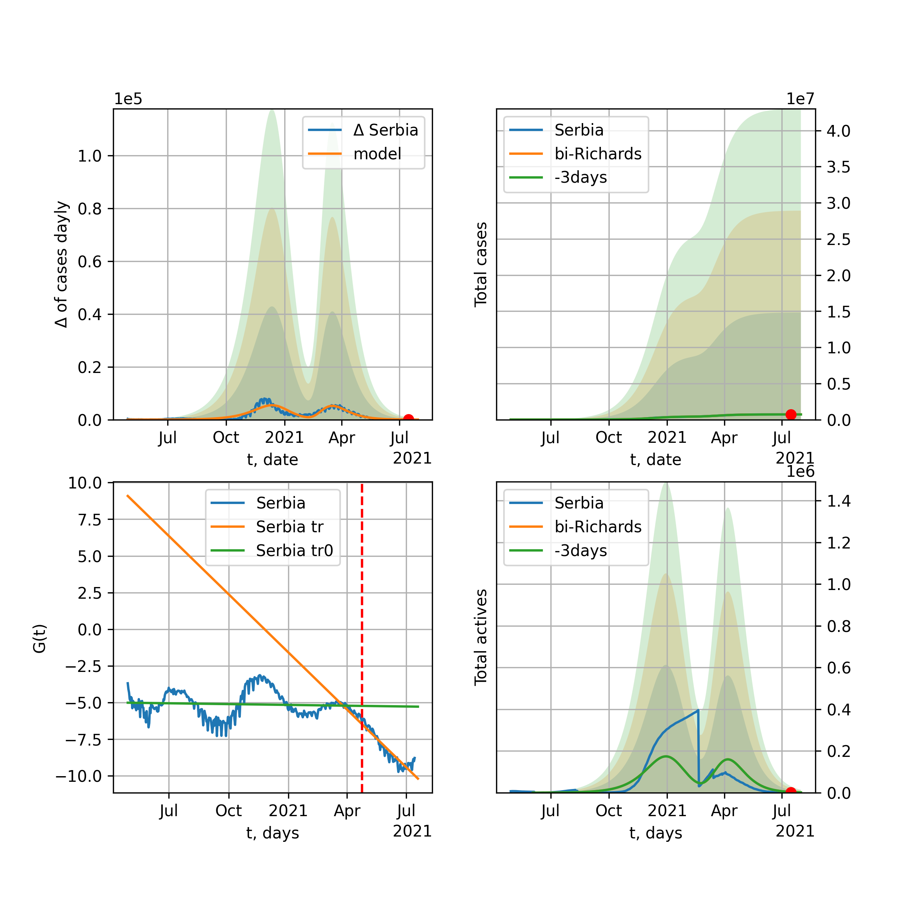
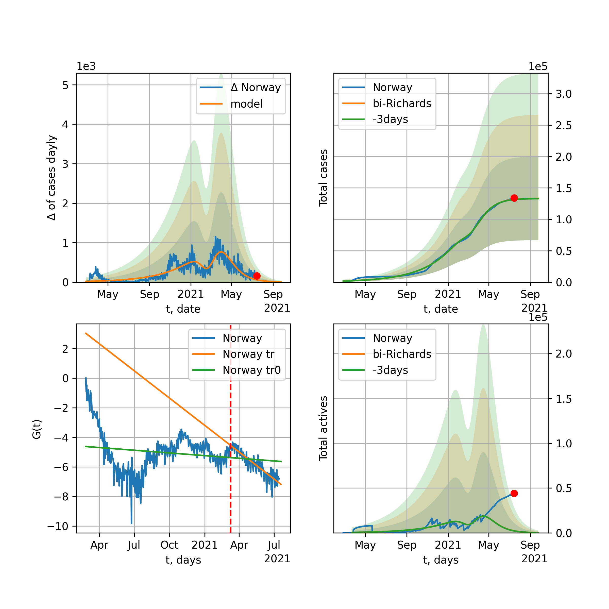
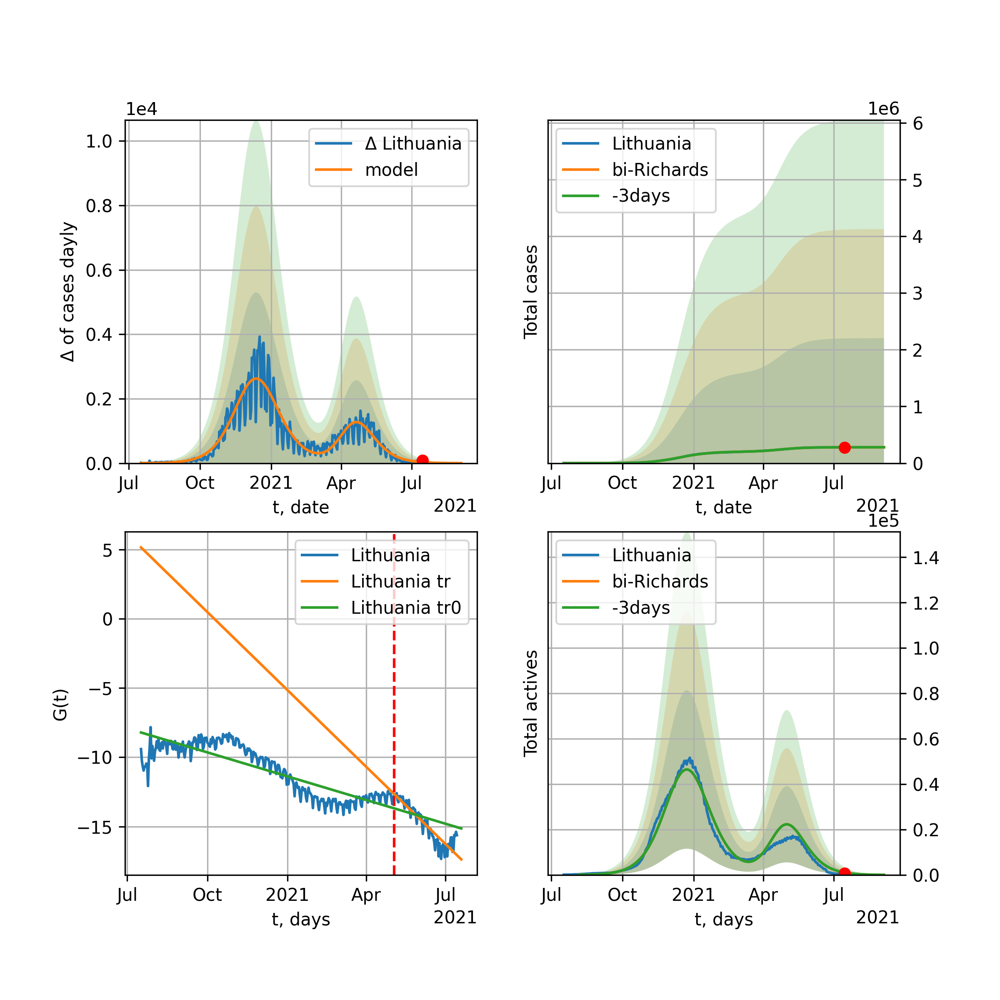

Multi-logistic model of COVID-19 dynamics
Model, code, results
Project maintained by algmaknick Hosted on GitHub Pages — Theme by mattgraham
World

World data at: 2020-11-30
+3 day model MAPE: 0.000839
model: bi-Richards
coeffs: [2.09095429e+07 1.91410071e+00 1.47467291e+02 2.13081691e-02]
rational stdev: 0.173993
forecast at the end of period: +653 days
deltaDaycases: 2650
total cases: 121161183 ± 21081147
total death: 2808136 ± 1465784
bi-Richards approximation splitting point: 200
actives k: 33
trend coefficient of determination: 0.811726
intercept: -3.134896
slope: -0.011070
trend coefficient of determination: 0.034941
intercept: -5.364422
slope: 0.001644
European Union

European Union data at: 2020-11-30
+3 day model MAPE: 0.013692
model: bi-Richards
coeffs: [1.06747361e+07 4.23695768e-02 2.55617544e+02 2.95306685e+00]
rational stdev: 0.236543
forecast at the end of period: +68 days
deltaDaycases: 23
total cases: 12145574 ± 2872945
total death: 280550 ± 199086
bi-Richards approximation splitting point: 200
actives k: 26
trend coefficient of determination: 0.536377
intercept: -37.270118
slope: -0.070101
trend coefficient of determination: 0.928505
intercept: -32.763930
slope: -0.070855
Brazil

Brazil data at: 2020-11-30
+3 day model MAPE: 0.004721
model: bi-Richards
coeffs: [1.03595060e+06 5.97225268e-01 2.34278726e+02 1.05031750e-01]
rational stdev: 0.267278
forecast at the end of period: +243 days
deltaDaycases: 153
total cases: 7591533 ± 2029047
total death: 207470 ± 166356
bi-Richards approximation splitting point: 220
actives k: 17
trend coefficient of determination: 0.672455
intercept: -2.665879
slope: -0.019678
trend coefficient of determination: 0.022968
intercept: -8.262419
slope: 0.004430
Russia

Russia data at: 2020-11-30
+3 day model MAPE: 0.003756
model: bi-Richards
coeffs: [3.47373400e+06 8.43406677e-01 3.45004417e+01 2.22590225e-02]
rational stdev: 0.175149
forecast at the end of period: +313 days
deltaDaycases: 203
total cases: 4596705 ± 805107
total death: 79883 ± 41974
bi-Richards approximation splitting point: 200
actives k: 26
trend coefficient of determination: 0.730793
intercept: -2.963613
slope: -0.015765
trend coefficient of determination: 0.047690
intercept: -5.144703
slope: 0.001603
USA

USA data at: 2020-11-30
+3 day model MAPE: 0.003764
model: bi-Richards
coeffs: [6.95279818e+06 1.10973780e+00 1.90029528e+02 4.71735942e-02]
rational stdev: 0.254850
forecast at the end of period: +656 days
deltaDaycases: 239
total cases: 23472301 ± 5981905
total death: 462585 ± 353668
bi-Richards approximation splitting point: 150
actives k: 52
trend coefficient of determination: 0.651342
intercept: -2.793355
slope: -0.019791
trend coefficient of determination: 0.315846
intercept: -6.750932
slope: 0.005777
Spain

Spain data at: 2020-11-30
+3 day model MAPE: 0.010353
model: bi-Richards
coeffs: [5.81361413e+05 1.13322569e-01 2.21224560e+02 5.73579490e-01]
rational stdev: 0.310223
forecast at the end of period: +453 days
deltaDaycases: 3
total cases: 11427664 ± 3545127
total death: 309339 ± 287892
bi-Richards approximation splitting point: 230
actives k: 35
trend coefficient of determination: 0.202397
intercept: -10.366791
slope: -0.013334
trend coefficient of determination: 0.586176
intercept: -3.412513
slope: -0.036527
Italy

Italy data at: 2020-11-30
+3 day model MAPE: 0.015641
model: bi-Richards
coeffs: [1.47836110e+06 6.77031528e-02 2.60866539e+02 1.91459314e+00]
rational stdev: 0.157489
forecast at the end of period: +68 days
deltaDaycases: 3
total cases: 1728155 ± 272165
total death: 59969 ± 28333
bi-Richards approximation splitting point: 200
actives k: 28
trend coefficient of determination: 0.573420
intercept: -22.112191
slope: -0.056202
trend coefficient of determination: 0.344027
intercept: -24.004008
slope: -0.022747
United Kingdom

United Kingdom data at: 2020-11-30
+3 day model MAPE: 0.004919
model: bi-Richards
coeffs: [1.71187565e+06 9.15776843e-02 2.17456813e+02 5.18880226e-01]
rational stdev: 0.202901
forecast at the end of period: +173 days
deltaDaycases: 6
total cases: 2035161 ± 412937
total death: 72991 ± 44429
bi-Richards approximation splitting point: 200
actives k: 35
trend coefficient of determination: 0.627508
intercept: -7.804878
slope: -0.029225
trend coefficient of determination: 0.656596
intercept: -5.877472
slope: -0.022401
France

France data at: 2020-11-30
+3 day model MAPE: 0.009322
model: bi-Richards
coeffs: [2.06417251e+06 3.57149865e-02 2.51430428e+02 6.06235635e+00]
rational stdev: 0.095282
forecast at the end of period: +138 days
deltaDaycases: 0
total cases: 2206713 ± 210261
total death: 52356 ± 14965
bi-Richards approximation splitting point: 95
actives k: 105
trend coefficient of determination: 0.765069
intercept: -48.020400
slope: -0.421202
trend coefficient of determination: 0.841625
intercept: -66.222216
slope: -0.090271
Germany

Germany data at: 2020-11-30
+3 day model MAPE: 0.019127
model: bi-Richards
coeffs: [9.60601408e+05 5.24792763e-02 2.51364131e+02 2.22670941e+00]
rational stdev: 0.203428
forecast at the end of period: +47 days
deltaDaycases: 80
total cases: 1184935 ± 241048
total death: 18677 ± 11398
bi-Richards approximation splitting point: 210
actives k: 17
trend coefficient of determination: 0.449401
intercept: -27.405016
slope: -0.038536
trend coefficient of determination: 0.773463
intercept: -22.133678
slope: -0.047082
Turkey

Turkey data at: 2020-11-29
+3 day model MAPE: 0.024814
model: bi-Richards
coeffs: [ 9.50057919e+05 1.19390991e+00 -1.55704149e+02 8.94613163e-03]
rational stdev: 0.206702
forecast at the end of period: +440 days
deltaDaycases: 140
total cases: 1200564 ± 248159
total death: 26788 ± 16611
bi-Richards approximation splitting point: 180
actives k: 17
trend coefficient of determination: 0.644257
intercept: -2.937253
slope: -0.018715
trend coefficient of determination: 0.678426
intercept: -8.089942
slope: 0.013514
Iran

Iran data at: 2020-11-30
+3 day model MAPE: 0.005422
model: bi-Richards
coeffs: [4.73097814e+06 1.64089186e-01 1.88887345e+02 9.57754985e-02]
rational stdev: 0.256561
forecast at the end of period: +397 days
deltaDaycases: 393
total cases: 5313230 ± 1363169
total death: 266448 ± 205080
bi-Richards approximation splitting point: 200
actives k: 17
trend coefficient of determination: 0.756194
intercept: -3.006939
slope: -0.020227
trend coefficient of determination: 0.774702
intercept: -8.818358
slope: 0.012165
Canada

Canada data at: 2020-11-30
+3 day model MAPE: 0.004495
model: bi-Richards
coeffs: [2.01292561e+06 3.88052893e-01 1.55072096e+01 2.87098065e-02]
rational stdev: 0.243095
forecast at the end of period: +439 days
deltaDaycases: 356
total cases: 2102511 ± 511109
total death: 67444 ± 49185
bi-Richards approximation splitting point: 200
actives k: 17
trend coefficient of determination: 0.775275
intercept: -2.328571
slope: -0.024036
trend coefficient of determination: 0.434775
intercept: -6.825853
slope: 0.008914
South Africa

South Africa data at: 2020-11-30
+3 day model MAPE: 0.005547
model: bi-Richards
coeffs: [2.20645051e+05 3.16058114e+00 3.15168319e+01 7.58929014e-03]
rational stdev: 0.289245
forecast at the end of period: +173 days
deltaDaycases: 43
total cases: 869327 ± 251448
total death: 23697 ± 20562
bi-Richards approximation splitting point: 200
actives k: 17
trend coefficient of determination: 0.699846
intercept: -1.692421
slope: -0.019452
trend coefficient of determination: 0.203225
intercept: -7.795487
slope: 0.007092
Belgium

Belgium data at: 2020-11-30
+3 day model MAPE: 0.010260
model: bi-Richards
coeffs: [4.96262655e+05 6.42259914e-02 2.34932697e+02 3.07152380e+00]
rational stdev: 0.177534
forecast at the end of period: +68 days
deltaDaycases: 0
total cases: 562212 ± 99811
total death: 16208 ± 8632
bi-Richards approximation splitting point: 170
actives k: 61
trend coefficient of determination: 0.567481
intercept: -29.304921
slope: -0.086743
trend coefficient of determination: 0.777802
intercept: -25.479366
slope: -0.074991
Peru

Peru data at: 2020-11-30
+3 day model MAPE: 0.002241
model: bi-Richards
coeffs: [6.02774086e+05 2.82111424e+00 2.17777919e+01 1.13942730e-02]
rational stdev: 0.246269
forecast at the end of period: +33 days
deltaDaycases: 279
total cases: 962631 ± 237066
total death: 35929 ± 26544
bi-Richards approximation splitting point: 110
actives k: 21
trend coefficient of determination: 0.802445
intercept: -1.461515
slope: -0.026843
trend coefficient of determination: 0.800536
intercept: -2.352273
slope: -0.015298
Netherlands

Netherlands data at: 2020-11-30
+3 day model MAPE: 0.017205
model: bi-Richards
coeffs: [4.82155525e+05 5.36546512e-02 2.32299440e+02 1.70363923e+00]
rational stdev: 0.086167
forecast at the end of period: +33 days
deltaDaycases: 114
total cases: 531193 ± 45771
total death: 9514 ± 2459
bi-Richards approximation splitting point: 150
actives k: 35
trend coefficient of determination: 0.668059
intercept: -17.248649
slope: -0.066954
trend coefficient of determination: 0.749117
intercept: -17.650668
slope: -0.032973
India

India data at: 2020-11-30
+3 day model MAPE: 0.002902
model: bi-Richards
coeffs: [6.52451599e+06 1.27440841e-01 1.31212415e+02 2.32404392e-01]
rational stdev: 0.219578
forecast at the end of period: +313 days
deltaDaycases: 109
total cases: 10719701 ± 2353808
total death: 155936 ± 102720
bi-Richards approximation splitting point: 92
actives k: 13
trend coefficient of determination: 0.868476
intercept: -3.055923
slope: -0.037248
trend coefficient of determination: 0.968652
intercept: -4.194164
slope: -0.019040
Switzerland

Switzerland data at: 2020-11-30
+3 day model MAPE: 0.020292
model: bi-Richards
coeffs: [2.94311339e+05 7.44296369e-02 2.41184305e+02 1.79810163e+00]
rational stdev: 0.193595
forecast at the end of period: +33 days
deltaDaycases: 19
total cases: 330415 ± 63966
total death: 4864 ± 2824
bi-Richards approximation splitting point: 205
actives k: 17
trend coefficient of determination: 0.307103
intercept: -20.634555
slope: -0.028079
trend coefficient of determination: 0.745068
intercept: -10.097886
slope: -0.063216
Ecuador

Ecuador data at: 2020-11-30
+3 day model MAPE: 0.002559
model: bi-Richards
coeffs: [ 1.73403625e+05 1.85280317e+00 -1.14582366e+02 8.76097067e-03]
rational stdev: 0.079336
forecast at the end of period: +173 days
deltaDaycases: 54
total cases: 234966 ± 18641
total death: 16414 ± 3906
bi-Richards approximation splitting point: 80
actives k: 26
trend coefficient of determination: 0.273348
intercept: -2.211387
slope: -0.047271
trend coefficient of determination: 0.041413
intercept: -4.395128
slope: -0.004210
Portugal

Portugal data at: 2020-11-30
+3 day model MAPE: 0.010688
model: bi-Richards
coeffs: [3.12797813e+05 7.40330713e-02 2.41661168e+02 1.00281434e+00]
rational stdev: 0.224192
forecast at the end of period: +68 days
deltaDaycases: 87
total cases: 387324 ± 86834
total death: 5854 ± 3937
bi-Richards approximation splitting point: 210
actives k: 21
trend coefficient of determination: 0.560072
intercept: -11.904642
slope: -0.027460
trend coefficient of determination: 0.631818
intercept: -9.558439
slope: -0.026392
Saudi Arabia

Saudi Arabia data at: 2020-11-30
+3 day model MAPE: 0.000090
model: bi-Richards
coeffs: [3.20709083e+04 2.25235588e+00 4.41518361e+01 1.12217168e-02]
rational stdev: 0.223696
forecast at the end of period: +33 days
deltaDaycases: 144
total cases: 364088 ± 81445
total death: 6007 ± 4031
bi-Richards approximation splitting point: 200
actives k: 17
trend coefficient of determination: 0.970941
intercept: -1.785259
slope: -0.024529
trend coefficient of determination: 0.538384
intercept: -4.765527
slope: -0.009765
Sweden

Sweden data at: 2020-11-27
+3 day model MAPE: 0.031611
model: bi-Richards
coeffs: [1.97719384e+05 6.60892583e-02 2.64730773e+02 1.93676484e+00]
rational stdev: 0.259985
forecast at the end of period: +71 days
deltaDaycases: 1
total cases: 285526 ± 74232
total death: 7846 ± 6119
bi-Richards approximation splitting point: 200
actives k: 35
trend coefficient of determination: 0.767057
intercept: -15.075327
slope: -0.082317
trend coefficient of determination: 0.141453
intercept: -29.014708
slope: 0.007320
Pakistan

Pakistan data at: 2020-11-30
+3 day model MAPE: 0.004821
model: bi-Richards
coeffs: [2.10756839e+06 5.02129320e-01 1.62122341e+00 2.03571803e-02]
rational stdev: 0.273054
forecast at the end of period: +649 days
deltaDaycases: 90
total cases: 2401442 ± 655722
total death: 48516 ± 39742
bi-Richards approximation splitting point: 220
actives k: 26
trend coefficient of determination: 0.858622
intercept: -1.656484
slope: -0.024984
trend coefficient of determination: 0.912488
intercept: -14.097538
slope: 0.033086
Ireland

Ireland data at: 2020-11-30
+3 day model MAPE: 0.004934
model: bi-Richards
coeffs: [4.41791052e+04 1.05347914e-01 2.12897943e+02 7.31594215e-01]
rational stdev: 0.192371
forecast at the end of period: +33 days
deltaDaycases: 10
total cases: 73069 ± 14056
total death: 2067 ± 1192
bi-Richards approximation splitting point: 210
actives k: 35
trend coefficient of determination: 0.391090
intercept: -9.181597
slope: -0.029560
trend coefficient of determination: 0.829636
intercept: -2.536258
slope: -0.042726
Mexico

Mexico data at: 2020-11-30
+3 day model MAPE: 0.012544
model: bi-Richards
coeffs: [4.89872314e+05 2.24222249e+00 5.52489814e+01 1.03887382e-02]
rational stdev: 0.250292
forecast at the end of period: +103 days
deltaDaycases: 1023
total cases: 1403431 ± 351268
total death: 133519 ± 100256
bi-Richards approximation splitting point: 200
actives k: 17
trend coefficient of determination: 0.946136
intercept: -1.719792
slope: -0.018551
trend coefficient of determination: 0.008818
intercept: -4.828698
slope: -0.001756
Singapore

Singapore data at: 2020-11-30
+3 day model MAPE: 0.000455
model: bi-Richards
coeffs: [3.96898984e+04 1.37550740e-01 7.04329685e+01 2.10847432e-01]
rational stdev: 0.340483
forecast at the end of period: +33 days
deltaDaycases: 2
total cases: 58837 ± 20033
total death: 29 ± 29
bi-Richards approximation splitting point: 80
actives k: 26
trend coefficient of determination: 0.166158
intercept: -3.166443
slope: -0.018584
trend coefficient of determination: 0.864851
intercept: -2.126622
slope: -0.032971
Chile

Chile data at: 2020-11-30
+3 day model MAPE: 0.002687
model: bi-Richards
coeffs: [1.91614751e+05 2.59804189e+00 1.12580674e+01 9.39221181e-03]
S.Korea scenario coeffs: [0.36242246, 2.56241634, 1.84890887, 0.13324732]
rational stdev: 0.662881
forecast at the end of period: +103 days
deltaDaycases: 84
total cases: 580832 ± 385022
total death: 16222 ± 32259
bi-Richards approximation splitting point: 170
actives k: 10
trend coefficient of determination: 0.912774
intercept: -1.418410
slope: -0.025306
trend coefficient of determination: 0.520218
intercept: -4.371481
slope: -0.006741
Israel

Israel data at: 2020-11-30
+3 day model MAPE: 0.000151
model: bi-Richards
coeffs: [6.47825976e+04 2.01621587e-01 1.89800636e+02 1.67019701e+00]
rational stdev: 0.354983
forecast at the end of period: +82 days
deltaDaycases: 3
total cases: 340716 ± 120948
total death: 2897 ± 3085
bi-Richards approximation splitting point: 187
actives k: 11
trend coefficient of determination: 0.547842
intercept: -17.261436
slope: -0.039967
trend coefficient of determination: 0.715487
intercept: -14.483191
slope: -0.052887
Austria

Austria data at: 2020-11-30
+3 day model MAPE: 0.019696
model: bi-Richards
coeffs: [2.40786399e+05 7.10221312e-02 2.46741563e+02 2.26678558e+00]
rational stdev: 0.249115
forecast at the end of period: +593 days
deltaDaycases: 3
total cases: 1019814 ± 254050
total death: 11495 ± 8590
bi-Richards approximation splitting point: 210
actives k: 13
trend coefficient of determination: 0.332631
intercept: -23.712453
slope: -0.029527
trend coefficient of determination: 0.864193
intercept: -11.294253
slope: -0.079268
Belarus

Belarus data at: 2020-11-30
+3 day model MAPE: 0.004232
model: bi-Richards
coeffs: [3.65393276e+05 5.38855875e-01 2.19356377e+01 2.64385017e-02]
rational stdev: 0.093840
forecast at the end of period: +383 days
deltaDaycases: 39
total cases: 435048 ± 40824
total death: 3686 ± 1037
bi-Richards approximation splitting point: 200
actives k: 21
trend coefficient of determination: 0.690625
intercept: -2.829864
slope: -0.021855
trend coefficient of determination: 0.811990
intercept: -7.325012
slope: 0.010928
Japan

Japan data at: 2020-11-30
+3 day model MAPE: 0.030394
model: bi-Richards
coeffs: [ 6.50778093e+04 7.22049715e+00 -1.19096023e+02 3.48250629e-03]
rational stdev: 0.093829
forecast at the end of period: +425 days
deltaDaycases: 0
total cases: 388111 ± 36416
total death: 5603 ± 1577
bi-Richards approximation splitting point: 190
actives k: 11
trend coefficient of determination: 0.046536
intercept: -5.242933
slope: 0.003254
trend coefficient of determination: 0.319865
intercept: -8.416492
slope: 0.020322
China

China data at: 2020-11-30
+3 day model MAPE: 0.000224
model: bi-Richards
coeffs: [ 5.48003447e+03 3.19462658e+00 -3.09059278e+02 3.72399475e-03]
rational stdev: 0.069647
forecast at the end of period: +33 days
deltaDaycases: 7
total cases: 86625 ± 6033
total death: 4638 ± 969
bi-Richards approximation splitting point: 110
actives k: 17
trend coefficient of determination: 0.820997
intercept: -1.990655
slope: -0.082698
trend coefficient of determination: 0.113932
intercept: -10.154603
slope: 0.005914
Qatar

Qatar data at: 2020-11-30
+3 day model MAPE: 0.001108
model: bi-Richards
coeffs: [ 3.43464077e+04 1.76662220e+00 -5.66711037e+01 1.08248006e-02]
S.Korea scenario coeffs: [0.36242246, 2.56241634, 1.84890887, 0.13324732]
rational stdev: 0.081213
forecast at the end of period: +33 days
deltaDaycases: 92
total cases: 142175 ± 11546
total death: 242 ± 58
bi-Richards approximation splitting point: 144
actives k: 17
trend coefficient of determination: 0.918399
intercept: -1.943578
slope: -0.030865
trend coefficient of determination: 0.225400
intercept: -5.760479
slope: -0.003750
Poland

Poland data at: 2020-11-30
+3 day model MAPE: 0.002372
model: bi-Richards
coeffs: [1.11880954e+06 9.69463357e-02 2.41122206e+02 8.22635890e-01]
rational stdev: 0.275377
forecast at the end of period: +103 days
deltaDaycases: 35
total cases: 1200649 ± 330631
total death: 20782 ± 17168
bi-Richards approximation splitting point: 170
actives k: 21
trend coefficient of determination: 0.722682
intercept: -7.347804
slope: -0.047162
trend coefficient of determination: 0.150252
intercept: -11.601899
slope: -0.010247
UAE

UAE data at: 2020-11-30
+3 day model MAPE: 0.005078
model: bi-Richards
coeffs: [1.47131534e+05 4.01569710e-02 2.02510957e+02 8.42050137e-01]
rational stdev: 0.105154
forecast at the end of period: +173 days
deltaDaycases: 4
total cases: 203952 ± 21446
total death: 690 ± 217
bi-Richards approximation splitting point: 128
actives k: 11
trend coefficient of determination: 0.909961
intercept: -8.728555
slope: -0.053819
trend coefficient of determination: 0.029663
intercept: -14.142243
slope: -0.002174
Romania

Romania data at: 2020-11-30
+3 day model MAPE: 0.020811
model: bi-Richards
coeffs: [7.32431892e+05 6.45386608e-02 2.44961666e+02 6.41813195e-01]
rational stdev: 0.309483
forecast at the end of period: +236 days
deltaDaycases: 1
total cases: 823448 ± 254843
total death: 19628 ± 18223
bi-Richards approximation splitting point: 190
actives k: 17
trend coefficient of determination: 0.649781
intercept: -6.840548
slope: -0.031226
trend coefficient of determination: 0.126016
intercept: -10.539868
slope: -0.005824
Panama

Panama data at: 2020-11-30
+3 day model MAPE: 0.007118
model: bi-Richards
coeffs: [2.40724304e+05 1.02817504e+00 5.31509363e+01 1.67261191e-02]
rational stdev: 0.246172
forecast at the end of period: +285 days
deltaDaycases: 55
total cases: 363885 ± 89578
total death: 6757 ± 4990
bi-Richards approximation splitting point: 210
actives k: 26
trend coefficient of determination: 0.760166
intercept: -2.319938
slope: -0.015579
trend coefficient of determination: 0.354121
intercept: -7.696130
slope: 0.010156
Ukraine

Ukraine data at: 2020-11-30
+3 day model MAPE: 0.002405
model: bi-Richards
coeffs: [6.49433499e+06 2.04106975e-01 9.64908455e+01 5.71011044e-02]
rational stdev: 0.281586
forecast at the end of period: +663 days
deltaDaycases: 204
total cases: 7440518 ± 2095144
total death: 125299 ± 105847
bi-Richards approximation splitting point: 175
actives k: 35
trend coefficient of determination: 0.623946
intercept: -2.666183
slope: -0.016085
trend coefficient of determination: 0.040655
intercept: -4.901637
slope: 0.001138
Indonesia

Indonesia data at: 2020-11-30
+3 day model MAPE: 0.038052
model: Richards
coeffs: [ 4.71241400e+04 1.80052285e+00 -1.05975004e+02 1.46057737e-02]
rational stdev: 0.182929
forecast at the end of period: +61 days
deltaDaycases: 183
total cases: 39565 ± 7237
total death: 1244 ± 682
trend coefficient of determination: 0.798542
intercept: -1.926266
slope: -0.031064
Bangladesh

Bangladesh data at: 2020-11-30
+3 day model MAPE: 0.002412
model: bi-Richards
coeffs: [2.50174681e+05 1.54899566e+00 6.46422411e+01 1.31548617e-02]
rational stdev: 0.191283
forecast at the end of period: +271 days
deltaDaycases: 31
total cases: 669167 ± 128000
total death: 9562 ± 5487
bi-Richards approximation splitting point: 220
actives k: 35
trend coefficient of determination: 0.490808
intercept: -2.280725
slope: -0.016011
trend coefficient of determination: 0.093826
intercept: -7.133645
slope: 0.005912
South_Korea

South Korea data at: 2020-11-30
+3 day model MAPE: 0.023110
model: bi-Richards
coeffs: [ 2.74699059e+04 1.45061179e+00 -9.63940749e+01 1.03606477e-02]
rational stdev: 0.165378
forecast at the end of period: +173 days
deltaDaycases: 10
total cases: 38262 ± 6327
total death: 580 ± 287
bi-Richards approximation splitting point: 140
actives k: 26
trend coefficient of determination: 0.397625
intercept: -3.387745
slope: -0.026972
trend coefficient of determination: 0.053130
intercept: -6.182025
slope: 0.003692
Moldova

Moldova data at: 2020-11-30
+3 day model MAPE: 0.012258
model: bi-Richards
coeffs: [ 2.10705576e+05 7.44906391e-01 -3.69180932e+01 1.68013438e-02]
rational stdev: 0.266180
forecast at the end of period: +453 days
deltaDaycases: 14
total cases: 280377 ± 74630
total death: 6016 ± 4804
bi-Richards approximation splitting point: 170
actives k: 17
trend coefficient of determination: 0.666797
intercept: -2.235323
slope: -0.017356
trend coefficient of determination: 0.011339
intercept: -4.350124
slope: -0.001680
Denmark

Denmark data at: 2020-11-30
+3 day model MAPE: 0.002188
model: bi-Richards
coeffs: [2.60063265e+05 7.64518214e-01 1.61148819e+01 1.89309894e-02]
rational stdev: 0.234724
forecast at the end of period: +453 days
deltaDaycases: 7
total cases: 277337 ± 65097
total death: 2884 ± 2030
bi-Richards approximation splitting point: 206
actives k: 17
trend coefficient of determination: 0.228817
intercept: -3.416714
slope: -0.014501
trend coefficient of determination: 0.046353
intercept: -4.959483
slope: 0.002805
Serbia

Serbia data at: 2020-11-30
+3 day model MAPE: 0.014210
model: bi-Richards
coeffs: [1.10818505e+06 2.87265459e-01 2.01879449e+02 1.07974957e-01]
rational stdev: 0.255087
forecast at the end of period: +383 days
deltaDaycases: 0
total cases: 1142014 ± 291312
total death: 10441 ± 7990
bi-Richards approximation splitting point: 220
actives k: 35
trend coefficient of determination: 0.528313
intercept: -3.943727
slope: -0.015556
trend coefficient of determination: 0.154694
intercept: -6.804262
slope: 0.009983
Kuwait

Kuwait data at: 2020-11-30
+3 day model MAPE: 0.002395
model: bi-Richards
coeffs: [ 1.55250512e+05 1.20070616e+00 -1.92505852e+02 1.08184385e-02]
rational stdev: 0.182697
forecast at the end of period: +82 days
deltaDaycases: 173
total cases: 163767 ± 29919
total death: 1010 ± 553
bi-Richards approximation splitting point: 90
actives k: 17
trend coefficient of determination: 0.170633
intercept: -2.540305
slope: -0.009847
trend coefficient of determination: 0.737629
intercept: -3.463142
slope: -0.008914
Philippines

Philippines data at: 2020-11-30
+3 day model MAPE: 0.004368
model: bi-Richards
coeffs: [4.49199585e+05 5.94492970e-02 1.33904070e+02 4.66382885e-01]
rational stdev: 0.231316
forecast at the end of period: +159 days
deltaDaycases: 11
total cases: 453211 ± 104834
total death: 8811 ± 6114
bi-Richards approximation splitting point: 36
actives k: 26
trend coefficient of determination: 0.780747
intercept: -3.064393
slope: -0.132903
trend coefficient of determination: 0.897579
intercept: -6.678883
slope: -0.019306
Norway

Norway data at: 2020-11-30
+3 day model MAPE: 0.056513
model: bi-Richards
coeffs: [2.91259130e+04 6.24226593e-02 2.57968379e+02 1.43628557e+00]
rational stdev: 0.271431
forecast at the end of period: +89 days
deltaDaycases: 1
total cases: 42049 ± 11413
total death: 386 ± 314
bi-Richards approximation splitting point: 230
actives k: 35
trend coefficient of determination: 0.359086
intercept: -14.106987
slope: -0.030351
trend coefficient of determination: 0.351398
intercept: -12.867468
slope: -0.022748
Czechia

Czechia data at: 2020-11-30
+3 day model MAPE: 0.010784
model: bi-Richards
coeffs: [5.04933025e+05 6.77115606e-02 2.38541696e+02 1.74065682e+00]
rational stdev: 0.278848
forecast at the end of period: +33 days
deltaDaycases: 38
total cases: 524649 ± 146297
total death: 8316 ± 6956
bi-Richards approximation splitting point: 160
actives k: 17
trend coefficient of determination: 0.565236
intercept: -13.703086
slope: -0.065640
trend coefficient of determination: 0.868678
intercept: -9.800444
slope: -0.064646
Colombia

Colombia data at: 2020-11-30
+3 day model MAPE: 0.004259
model: bi-Richards
coeffs: [7.00866573e+05 2.37532160e+00 9.87338127e+01 1.38479422e-02]
rational stdev: 0.252208
forecast at the end of period: +173 days
deltaDaycases: 31
total cases: 1534663 ± 387054
total death: 42848 ± 32419
bi-Richards approximation splitting point: 170
actives k: 11
trend coefficient of determination: 0.636864
intercept: -2.194462
slope: -0.011667
trend coefficient of determination: 0.553272
intercept: -3.479474
slope: -0.006934
Australia

Australia data at: 2020-11-30
+3 day model MAPE: 0.000730
model: bi-Richards
coeffs: [2.05556325e+04 1.18457206e-01 1.21820501e+02 6.64490986e-01]
rational stdev: 0.050179
forecast at the end of period: +19 days
deltaDaycases: 0
total cases: 27489 ± 1379
total death: 894 ± 134
bi-Richards approximation splitting point: 104
actives k: 26
trend coefficient of determination: 0.543740
intercept: -8.579543
slope: -0.048652
trend coefficient of determination: 0.874146
intercept: -5.343810
slope: -0.040706
Malaysia

Malaysia data at: 2020-11-30
+3 day model MAPE: 0.012144
model: bi-Richards
coeffs: [1.13519405e+05 1.08896668e+00 1.22454214e+02 2.51673474e-02]
rational stdev: 0.217538
forecast at the end of period: +173 days
deltaDaycases: 19
total cases: 121722 ± 26479
total death: 667 ± 435
bi-Richards approximation splitting point: 170
actives k: 15
trend coefficient of determination: 0.662026
intercept: -2.429557
slope: -0.033767
trend coefficient of determination: 0.519281
intercept: -13.789242
slope: 0.039380
Dominican Republic

Dominican Republic data at: 2020-11-30
+3 day model MAPE: 0.009178
model: bi-Richards
coeffs: [5.45992216e+04 2.61057378e+00 2.88620945e+01 9.69908019e-03]
rational stdev: 0.193829
forecast at the end of period: +103 days
deltaDaycases: 43
total cases: 158720 ± 30764
total death: 2569 ± 1493
bi-Richards approximation splitting point: 200
actives k: 35
trend coefficient of determination: 0.784795
intercept: -2.562212
slope: -0.015365
trend coefficient of determination: 0.050033
intercept: -7.185223
slope: 0.006374
Egypt

Egypt data at: 2020-11-30
+3 day model MAPE: 0.004282
model: bi-Richards
coeffs: [ 6.51544631e+04 1.03479905e+00 -1.31674768e+02 1.06808806e-02]
rational stdev: 0.142023
forecast at the end of period: +173 days
deltaDaycases: 118
total cases: 151324 ± 21491
total death: 8681 ± 3698
bi-Richards approximation splitting point: 140
actives k: 43
trend coefficient of determination: 0.797782
intercept: -2.045430
slope: -0.021434
trend coefficient of determination: 0.261997
intercept: -7.504547
slope: 0.004776
Finland

Finland data at: 2020-11-30
+3 day model MAPE: 0.026065
model: bi-Richards
coeffs: [4.17014270e+04 1.38978928e+00 2.14294982e+01 1.31470697e-02]
rational stdev: 0.132821
forecast at the end of period: +194 days
deltaDaycases: 20
total cases: 48431 ± 6432
total death: 775 ± 308
bi-Richards approximation splitting point: 210
actives k: 26
trend coefficient of determination: 0.379131
intercept: -3.217259
slope: -0.020290
trend coefficient of determination: 0.001107
intercept: -4.199899
slope: -0.001074
Morocco

Morocco data at: 2020-11-30
+3 day model MAPE: 0.001238
model: bi-Richards
coeffs: [ 2.18539617e+05 1.17596680e+00 -8.26956284e+01 1.21166224e-02]
rational stdev: 0.275223
forecast at the end of period: +383 days
deltaDaycases: 9
total cases: 496921 ± 136764
total death: 8152 ± 6730
bi-Richards approximation splitting point: 150
actives k: 11
trend coefficient of determination: 0.297786
intercept: -2.734210
slope: -0.013332
trend coefficient of determination: 0.480532
intercept: -2.626131
slope: -0.007119
Uzbekistan

Uzbekistan data at: 2020-11-30
+3 day model MAPE: 0.003386
model: bi-Richards
coeffs: [1.34617513e+04 9.81249394e+00 8.29034863e+01 4.44099065e-03]
rational stdev: 0.433212
forecast at the end of period: +61 days
deltaDaycases: 7
total cases: 74537 ± 32290
total death: 622 ± 808
bi-Richards approximation splitting point: 200
actives k: 11
trend coefficient of determination: 0.458965
intercept: -2.610027
slope: -0.010998
trend coefficient of determination: 0.498650
intercept: -1.689212
slope: -0.017310
Argentina

Argentina data at: 2020-11-30
+3 day model MAPE: 0.003035
model: bi-Richards
coeffs: [1.50925402e+06 2.05358881e-01 1.16953283e+02 1.22007294e-01]
rational stdev: 0.199405
forecast at the end of period: +243 days
deltaDaycases: 22
total cases: 1773376 ± 353620
total death: 48214 ± 28842
bi-Richards approximation splitting point: 140
actives k: 16
trend coefficient of determination: 0.068678
intercept: -3.733690
slope: -0.008365
trend coefficient of determination: 0.848652
intercept: -2.598794
slope: -0.016344
Algeria

Algeria data at: 2020-11-30
+3 day model MAPE: 0.018326
model: bi-Richards
coeffs: [3.66771002e+04 5.12516408e-02 2.32326516e+02 5.65645695e+00]
rational stdev: 0.113720
forecast at the end of period: +33 days
deltaDaycases: 0
total cases: 86723 ± 9862
total death: 2533 ± 864
bi-Richards approximation splitting point: 200
actives k: 35
trend coefficient of determination: 0.955687
intercept: -47.749332
slope: -0.114346
trend coefficient of determination: 0.561783
intercept: -61.252314
slope: -0.027866
Luxembourg

Luxembourg data at: 2020-11-30
+3 day model MAPE: 0.017692
model: bi-Richards
coeffs: [2.85664636e+04 2.01102080e-01 2.19671218e+02 3.36586774e-01]
rational stdev: 0.260216
forecast at the end of period: +1069 days
deltaDaycases: 2
total cases: 65234 ± 16975
total death: 603 ± 470
bi-Richards approximation splitting point: 190
actives k: 17
trend coefficient of determination: 0.198273
intercept: -6.256781
slope: -0.015579
trend coefficient of determination: 0.022534
intercept: -8.560825
slope: 0.005132
Thailand

Thailand data at: 2020-11-30
+3 day model MAPE: 0.002167
model: bi-Richards
coeffs: [ 2.11930441e+03 7.82515767e-01 -3.81477383e+02 9.83585504e-03]
rational stdev: 0.049010
forecast at the end of period: +103 days
deltaDaycases: 4
total cases: 4476 ± 219
total death: 67 ± 9
bi-Richards approximation splitting point: 60
actives k: 17
trend coefficient of determination: 0.843435
intercept: -1.262488
slope: -0.117624
trend coefficient of determination: 0.128306
intercept: -8.229707
slope: 0.007171
Hungary

Hungary data at: 2020-11-30
+3 day model MAPE: 0.032649
model: bi-Richards
coeffs: [9.46173579e+04 8.31933899e-02 2.45728446e+02 1.74095132e+00]
rational stdev: 2.312149
forecast at the end of period: +54 days
deltaDaycases: 1
total cases: 264570 ± 611725
total death: 5876 ± 40758
bi-Richards approximation splitting point: 210
actives k: 35
trend coefficient of determination: 0.513711
intercept: -13.279858
slope: -0.045933
trend coefficient of determination: 0.928976
intercept: -7.477274
slope: -0.065645
Greece

Greece data at: 2020-11-30
+3 day model MAPE: 0.009079
model: bi-Richards
coeffs: [5.63899965e+04 5.20936728e-01 2.22706947e+02 1.92639511e-01]
rational stdev: 0.613298
forecast at the end of period: +138 days
deltaDaycases: 0
total cases: 252653 ± 154952
total death: 5774 ± 10623
bi-Richards approximation splitting point: 240
actives k: 46
trend coefficient of determination: 0.009823
intercept: -5.753267
slope: -0.001794
trend coefficient of determination: 0.789374
intercept: 8.970699
slope: -0.058084
Iraq

Iraq data at: 2020-11-30
+3 day model MAPE: 0.001718
model: bi-Richards
coeffs: [ 7.35622788e+05 5.76012091e-01 -6.40279752e+01 2.65067614e-02]
rational stdev: 0.193443
forecast at the end of period: +285 days
deltaDaycases: 42
total cases: 741513 ± 143440
total death: 16450 ± 9546
bi-Richards approximation splitting point: 80
actives k: 17
trend coefficient of determination: 0.291988
intercept: -2.637166
slope: -0.017444
trend coefficient of determination: 0.943782
intercept: -1.647684
slope: -0.016280
Croatia

Croatia data at: 2020-11-30
+3 day model MAPE: 0.030855
model: bi-Richards
coeffs: [2.09280206e+05 2.37649101e+00 1.23217276e+02 1.52273509e-02]
rational stdev: 0.441290
forecast at the end of period: +173 days
deltaDaycases: 9
total cases: 227233 ± 100275
total death: 3159 ± 4182
bi-Richards approximation splitting point: 220
actives k: 11
trend coefficient of determination: 0.014354
intercept: -5.196211
slope: 0.003672
trend coefficient of determination: 0.103595
intercept: -0.141306
slope: -0.014774
Iceland

Iceland data at: 2020-11-30
+3 day model MAPE: 0.004490
model: bi-Richards
coeffs: [3.52616486e+03 4.75570297e-02 2.28717748e+02 2.79887118e+00]
rational stdev: 0.169104
forecast at the end of period: +33 days
deltaDaycases: 0
total cases: 5308 ± 897
total death: 25 ± 12
bi-Richards approximation splitting point: 170
actives k: 17
trend coefficient of determination: 0.348631
intercept: -21.305001
slope: -0.055967
trend coefficient of determination: 0.475282
intercept: -20.417452
slope: -0.033814
Estonia

Estonia data at: 2020-11-30
+3 day model MAPE: 0.078460
model: bi-Richards
coeffs: [1.04726688e+04 7.31629400e-02 2.48641977e+02 2.08657899e+00]
rational stdev: 0.185728
forecast at the end of period: +628 days
deltaDaycases: 3
total cases: 71139 ± 13212
total death: 682 ± 379
bi-Richards approximation splitting point: 215
actives k: 26
trend coefficient of determination: 0.263813
intercept: -19.250195
slope: -0.019118
trend coefficient of determination: 0.393878
intercept: -13.027929
slope: -0.039029
Bulgaria

Bulgaria data at: 2020-11-30
+3 day model MAPE: 0.006233
model: bi-Richards
coeffs: [1.73764607e+05 1.89430823e-01 2.17622021e+02 3.28536935e-01]
rational stdev: 0.201050
forecast at the end of period: +103 days
deltaDaycases: 6
total cases: 196112 ± 39428
total death: 5446 ± 3284
bi-Richards approximation splitting point: 210
actives k: 35
trend coefficient of determination: 0.639385
intercept: -4.899093
slope: -0.017628
trend coefficient of determination: 0.288896
intercept: -1.369392
slope: -0.024579
New Zealand

New Zealand data at: 2020-11-30
+3 day model MAPE: 0.002853
model: bi-Richards
coeffs: [6.46317924e+02 2.73530952e-01 3.09770108e+01 7.42448254e-02]
rational stdev: 0.015601
forecast at the end of period: +54 days
deltaDaycases: 0
total cases: 2103 ± 32
total death: 25 ± 1
bi-Richards approximation splitting point: 100
actives k: 17
trend coefficient of determination: 0.537864
intercept: -3.664671
slope: -0.081456
trend coefficient of determination: 0.038872
intercept: -8.251572
slope: 0.005105
Slovenia

Slovenia data at: 2020-11-30
+3 day model MAPE: 0.019809
model: bi-Richards
coeffs: [5.95178455e+04 7.12686479e+00 1.61903236e+02 9.15248372e-03]
rational stdev: 1.538703
forecast at the end of period: +103 days
deltaDaycases: 3
total cases: 138045 ± 212410
total death: 2612 ± 12057
bi-Richards approximation splitting point: 230
actives k: 17
trend coefficient of determination: 0.000516
intercept: -4.965350
slope: 0.000668
trend coefficient of determination: 0.085368
intercept: 4.765704
slope: -0.034474
Slovakia

Slovakia data at: 2020-11-30
+3 day model MAPE: 0.015827
model: bi-Richards
coeffs: [1.08694948e+05 9.24733943e-02 2.24361696e+02 8.45225952e-01]
rational stdev: 0.285525
forecast at the end of period: +33 days
deltaDaycases: 78
total cases: 113431 ± 32387
total death: 898 ± 769
bi-Richards approximation splitting point: 170
actives k: 30
trend coefficient of determination: 0.291328
intercept: -8.218239
slope: -0.029294
trend coefficient of determination: 0.694857
intercept: -2.790974
slope: -0.043074
Lithuania

Lithuania data at: 2020-11-30
+3 day model MAPE: 0.005102
model: bi-Richards
coeffs: [1.05513925e+05 1.95013570e+00 1.60812649e+02 2.23854064e-02]
rational stdev: 0.446265
forecast at the end of period: +194 days
deltaDaycases: 3
total cases: 171584 ± 76572
total death: 1415 ± 1894
bi-Richards approximation splitting point: 230
trend coefficient of determination: 0.013733
intercept: -4.387033
slope: -0.002475
trend coefficient of determination: 0.453797
intercept: 3.202787
slope: -0.026735
Latvia

Latvia data at: 2020-11-30
+3 day model MAPE: 0.024343
model: bi-Richards
coeffs: [1.09981439e+05 6.26324072e-01 8.37969064e+01 2.77289763e-02]
rational stdev: 0.143467
forecast at the end of period: +348 days
deltaDaycases: 9
total cases: 111004 ± 15925
total death: 1339 ± 576
bi-Richards approximation splitting point: 210
actives k: 46
trend coefficient of determination: 0.078183
intercept: -4.692027
slope: -0.008036
trend coefficient of determination: 0.031017
intercept: -1.968610
slope: -0.007452
Cyprus

Cyprus data at: 2020-11-30
+3 day model MAPE: 0.019202
model: bi-Richards
coeffs: [1.45650531e+04 3.69671818e+00 1.21461925e+02 1.02793235e-02]
rational stdev: 0.260063
forecast at the end of period: +803 days
deltaDaycases: 9
total cases: 28976 ± 7535
total death: 134 ± 104
bi-Richards approximation splitting point: 220
actives k: 43
trend coefficient of determination: 0.078468
intercept: -4.364515
slope: -0.007472
trend coefficient of determination: 0.271725
intercept: -0.068777
slope: -0.014656
Malta

Malta data at: 2020-11-30
+3 day model MAPE: 0.028183
model: bi-Richards
coeffs: [8.17205600e+03 4.35304023e-02 2.39037638e+02 1.05391657e+00]
rational stdev: 0.280788
forecast at the end of period: +194 days
deltaDaycases: 2
total cases: 26089 ± 7325
total death: 362 ± 304
bi-Richards approximation splitting point: 170
actives k: 17
trend coefficient of determination: 0.370188
intercept: -8.213000
slope: -0.037718
trend coefficient of determination: 0.428773
intercept: -8.959230
slope: -0.018219
Sri Lanka

Sri Lanka data at: 2020-11-30
+3 day model MAPE: 0.038295
model: bi-Richards
coeffs: [2.40198236e+04 5.09658174e-02 2.37854732e+02 2.37449917e+00]
rational stdev: 0.158435
forecast at the end of period: +54 days
deltaDaycases: 0
total cases: 26085 ± 4132
total death: 128 ± 60
bi-Richards approximation splitting point: 120
actives k: 17
trend coefficient of determination: 0.811994
intercept: -14.806964
slope: -0.091097
trend coefficient of determination: 0.068044
intercept: -23.766406
slope: -0.008803
References
- Worldometers COVID-19 Coronavirus Pandemic
- Su COVID-19 susijusi gyventojų ir verslo statistika
- Bi-logistic growth
- Least squares
- scikit-learn
- scipy.org
- European Centre for Disease Prevention and Control An agency of the European Union
- Aaron Miller, Mac Josh Reandelar, Kimberly Fasciglione, Violeta Roumenova, Yan Li, Gonzalo H Otazu, Correlation between universal BCG vaccination policy and reduced morbidity and mortality for COVID-19: an epidemiological study, https://doi.org/10.1101/2020.03.24.20042937
- c19.se